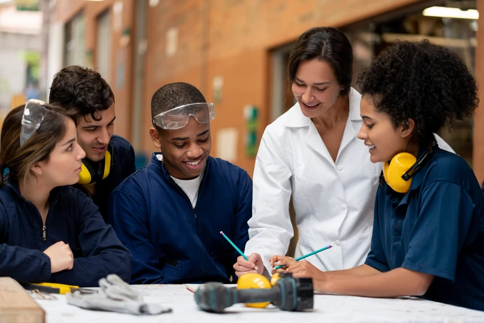
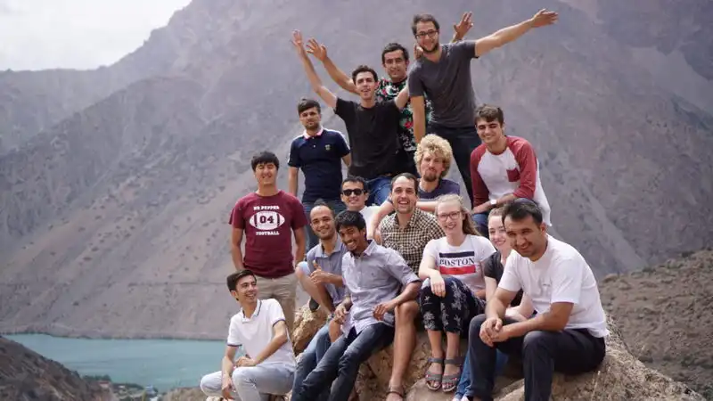
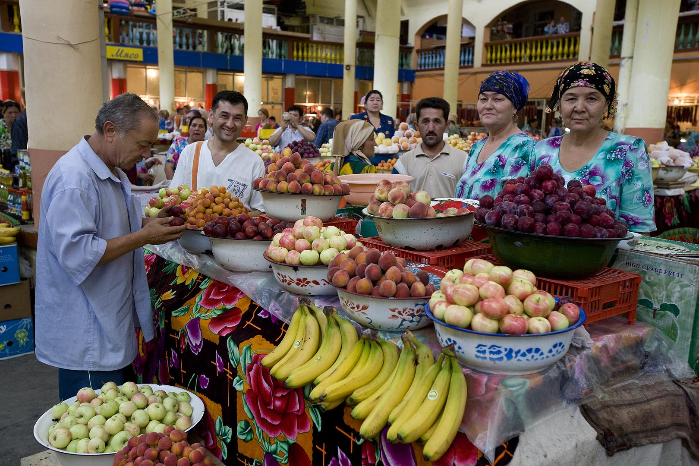
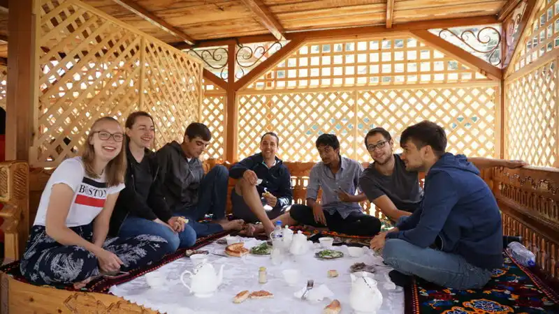
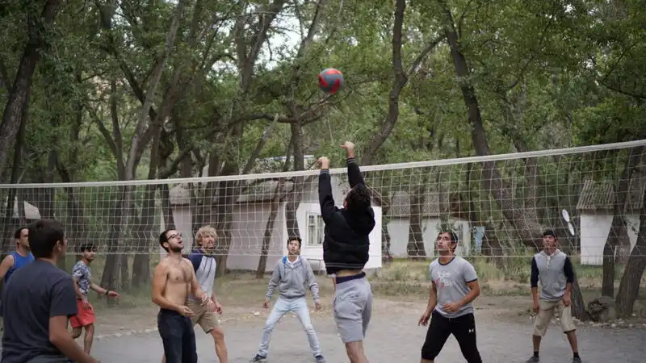

ON-SITE INTERNSHIPS
Professional experience abroad
Build your skills in a real workplace, experience another culture and develop your international network.
Find an internship abroad
WORK. EXPERIENCE. DISCOVER.
Welcome to IAESTE Khujand. We connect students in northern Tajikistan with international practical experience and the people who make it possible.

ABOUT IAESTE KHUJAND
Practical experience opens doors. Cultural exchange opens minds.
IAESTE Khujand is a branch of IAESTE Tajikistan. Our role is to help students, employers and incoming interns find their starting point in the IAESTE network.
Through international exchange, students can apply what they learn, discover a different working culture and build lasting professional and personal connections.
FOR STUDENTS
Explore the official IAESTE opportunities, then contact our branch about the application process in Tajikistan.
Build your skills in a real workplace, experience another culture and develop your international network.
Find an internship abroadDevelop practical skills and work across cultures through opportunities you can explore wherever you are.
Explore remote opportunitiesRead the offer’s requirements and register on the official IAESTE Exchange Platform.
Speak with IAESTE Khujand to confirm eligibility and the national application route.
Follow our branch’s current guidance for selection, documentation and nomination.
After employer acceptance, confirm the arrangements for your internship with our branch.
Eligibility, availability and deadlines vary by offer and national process. Confirm the details with our branch before applying.
FOR EMPLOYERS & UNIVERSITIES
International practical experience brings students, education and the workplace closer together. Discover how your organisation can take part.
Start a conversationDISCOVER NORTHERN TAJIKISTAN
From life along the Syr Darya to the colour and energy of Panjshanbe Bazaar, Khujand offers a new setting for everyday discoveries. Contact our Khujand branch with questions about your stay.

Panjshanbe BazaarNEWS & EXPERIENCES
Follow our national committee’s announcements and discover the experiences of IAESTE interns around the world.

News, announcements and community activity from IAESTE Tajikistan.
Visit the national news page
First-hand accounts of professional development, cultural exchange and friendship.
Read the intern storiesUSEFUL INFORMATION
For advice specific to you or your placement, contact the branch directly.
Read IAESTE’s student FAQsIAESTE focuses on practical experience in technical fields. Eligibility depends on the offer and the application process in your country. Contact IAESTE Khujand to check the route that applies to you.
Browse IAESTE’s official internship listings and read each offer carefully. Our branch can explain the opportunities and process available to students in Tajikistan.
There is no single document list or deadline for every placement. Use the offer’s requirements and our branch’s current guidance for application, selection and nomination.
Call the Khujand branch at +992 92 773 50 05. Confirm your placement arrangements and ask any questions about your stay before you arrive.
CONTACT IAESTE KHUJAND
Questions about an internship, hosting a student or coming to Khujand? Start with a conversation.
Khujand, Tajikistan